Fotos miscelánea
Fotos miscelánea
|
|
|
Fotos: miscelánea Pre King Crimson 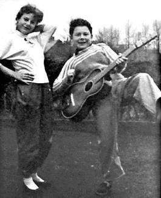 Robert Fripp niño con su hermana Patricia.
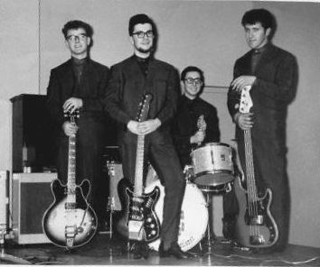 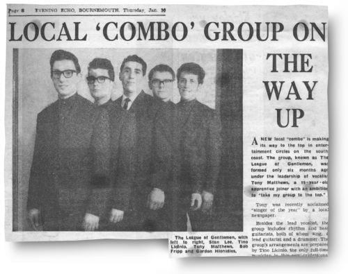
Arriba izquierda: la primera League of Gentlemen, 1965; de izquierda a derecha: Fripp, Tino Licinio, Stan Levy, Gordon Haskell. Derecha: nota en diario; de izquierda a derecha: Levy, Licinio, Tony Mathews, Fripp y Haskell. Abajo, en acción: Fripp, Haskell, Levy y Licinio. 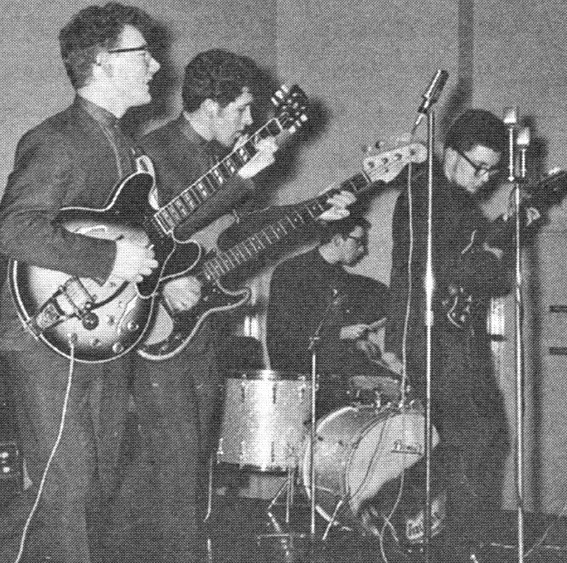 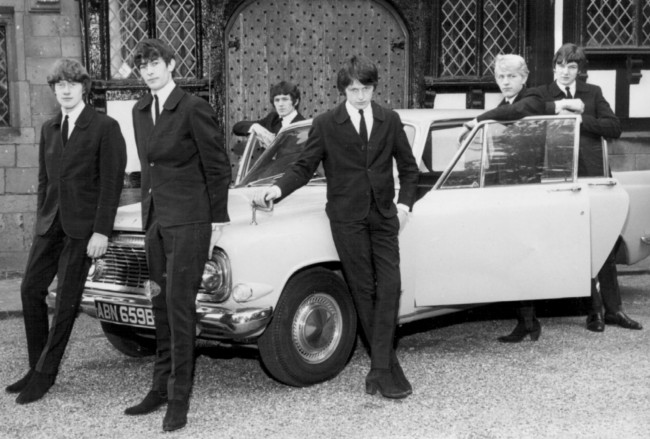 Arriba: The Warriors, banda que contaba con la voz de Jon Anderson (en el centro) y con Ian Wallace en la batería (a la derecha). En 1964 grabaron un simple con los temas You Came Along y Don't make Me blue. Abajo: Wallace con The Warriors tocando el tema Don't make Me blue en el film "Just for you" de ese año. 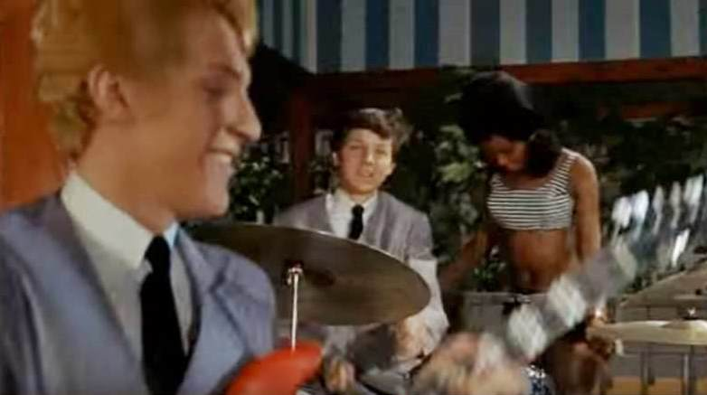 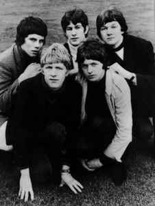 The Warriors (Jon Anderson está abajo a la derecha, y Wallace detrás suyo).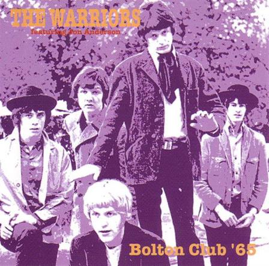 En 2003 se editó el CD "Bolton Club '65" con la grabación de un recital de los Warriors de ese año. 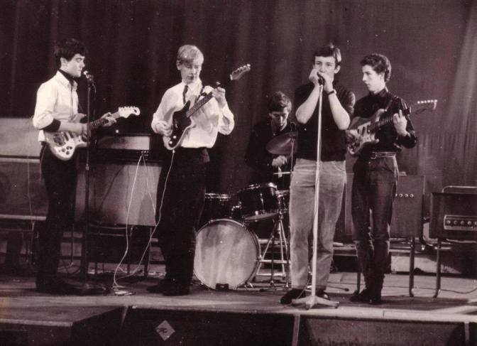 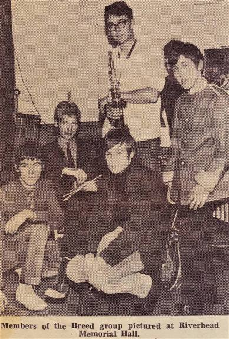 Arriba x2: Bruford tocando el bajo en 1964, y en una foto de un diario como parte de la Breed Blues Band, en la que tocó entre 1964 y 1967. 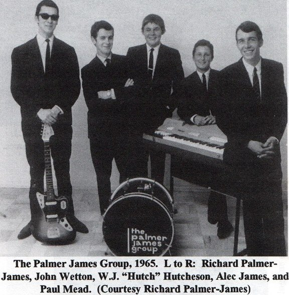 Abajo x2: The Shame, primera banda profesional de Greg Lake, entre el '66 y el '67 (en ambas fotos, Lake está a la izquierda). 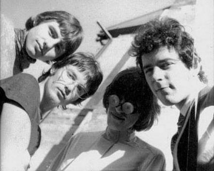 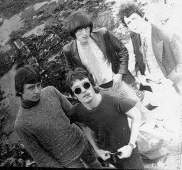 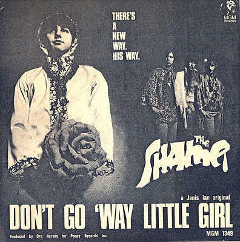 Tapa del simple que grabó The Shame en septiembre del '67.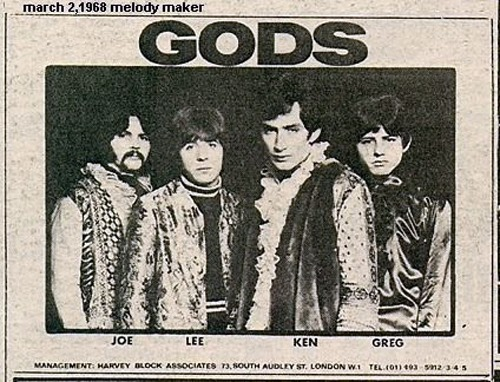 Arriba: Greg Lake en 1968 como parte del grupo Gods. Lee Kerslake y Ken Hensley luego fueron miembros de Uriah Heep. 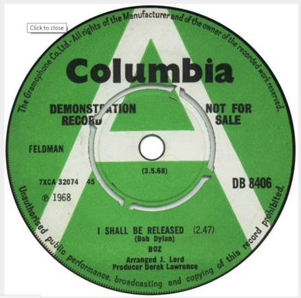 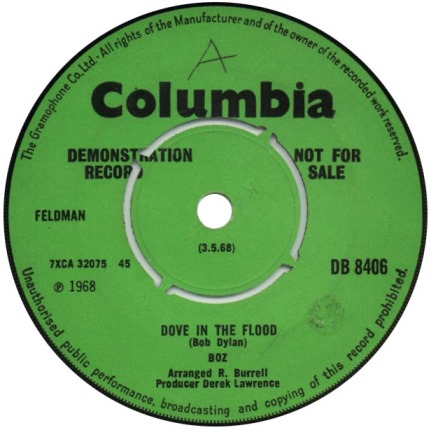 Arriba: las dos caras del demo grabado en abril del '68 por Boz Burrell en canto, acompañado por músicos que estaban formando la banda Deep Purple: Lord, Blackmore, Simper y Paice. Los 2 temas eran de Bob Dylan: I shall be released (arreglado por Lord) y Down in the flood. En 2001 se editó el disco "Pre Purple People", con grabaciones pre Deep Purple, y estos temas están incluidos como los nros. 12 y 13.
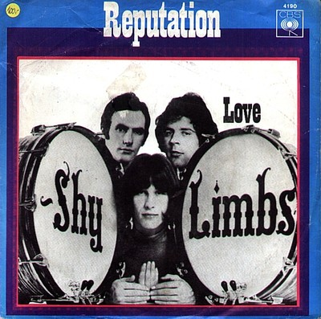 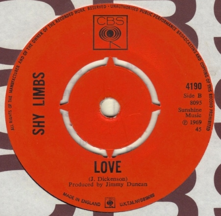 Arriba a la izquierda: tapa del simple "Reputation", del trío Shy Limbs, que contaba con Andy McCulloch en la batería (en la foto, es el de la izquierda). Tecladista y bajista de este trío habían sido parte de The Shame junto a Lake. El lado B del simple contenía el tema Love, grabado el 1 de octubre del '68 con la participación de Lake (voz y guitarra) y Fripp (guitarra líder) como invitados. El simple fue lanzado en mayo el '69, cuando King Crimson ya estaba andando.
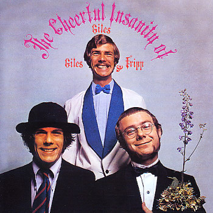 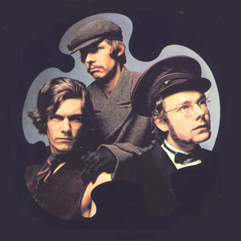 1968 - Arriba a la izquierda: tapa del disco "The cheerful insanity of Giles, Giles & Fripp", de Fripp y los hermanos Giles. A la derecha y abajo, el trío.
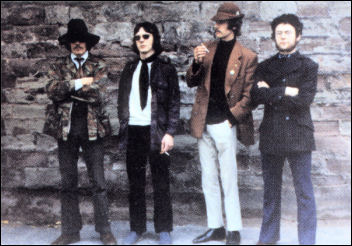 
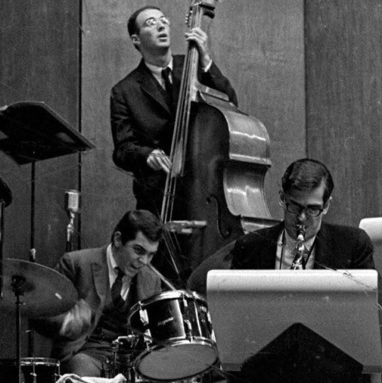 Un joven Tony Levin tocando el contrabajo. 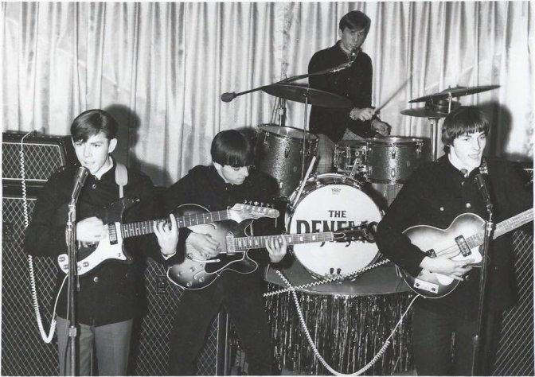 Belew en la percusión de la banda de covers The denems La era King Crimson
Arriba: Bruford con Yes. En la foto de la izquierda, en 1969. En la de la derecha, en 1970; con anteojos, Jon Anderson, quien cantó en el album "Lizard" ese año. Arriba a la izquierda: Bruford con Yes en escena, enero de 1971 (Tony Kaye al teclado, Steve Howe en guitarra). A la derecha: Palmer, Lake y Emerson durante la grabación de "Trilogy", noviembre de 1971. 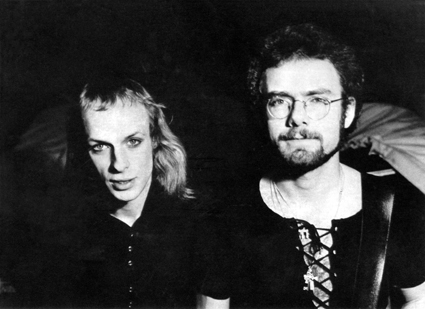 Fripp con Eno
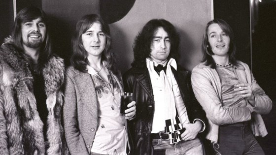 Boz Burrell (a la izquierda) con la banda Bad Company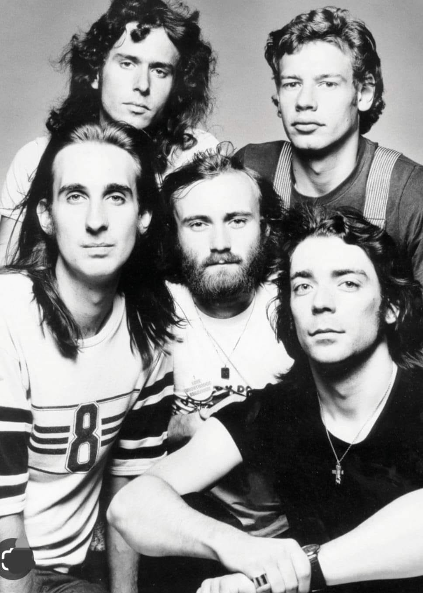 Bruford con Genesis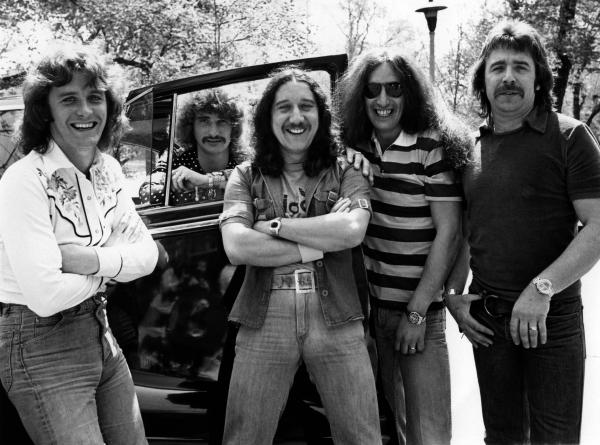 Arriba: Wetton (a la izquierda) en Uriah Heep, después de la disolución de KC. Abajo: Wetton y Bruford en UK, 1977, con Holdsworth y Jobson. 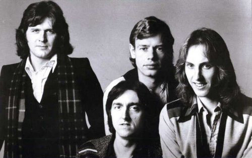
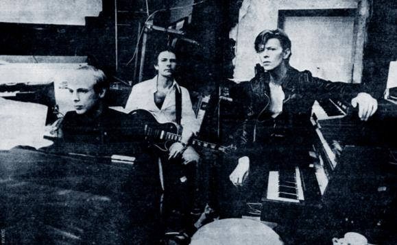 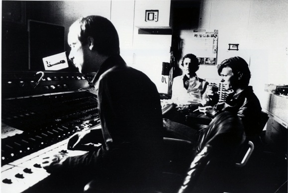 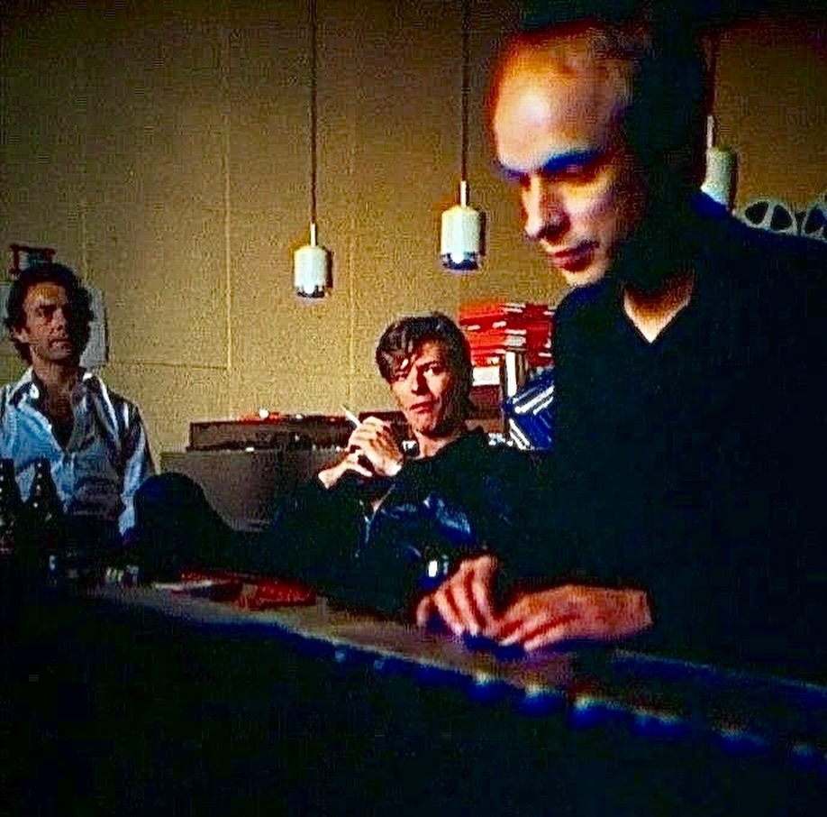 Eno, Fripp y Bowie en Berlín durante las sesiones de grabación del album "Heroes" (de Bowie, editado hacia fines de 1977). Con esta colaboración, Fripp volvía a la industria de la música después de 3 años de receso voluntario.
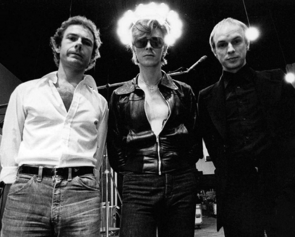 
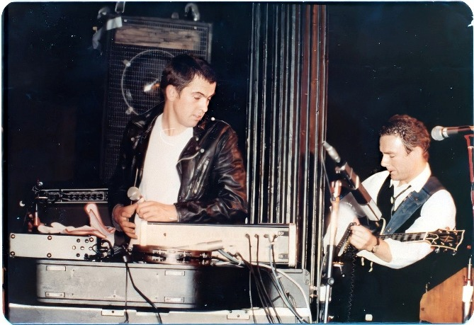 Fripp con Gabriel en vivo en NYC, 1978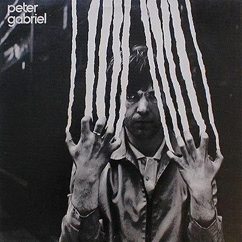 
Arriba: tapa del segundo disco solista de Peter Gabriel, 1978. Fripp y Gabriel en una sesión de grabación de ese disco.
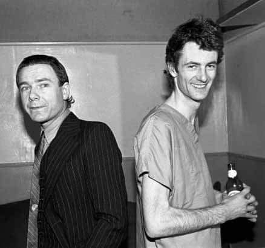 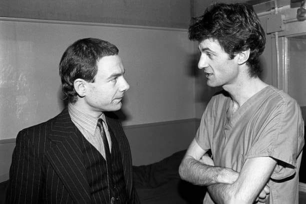 Fripp y Hammill
Belew con Zappa
Belew con Talking Heads
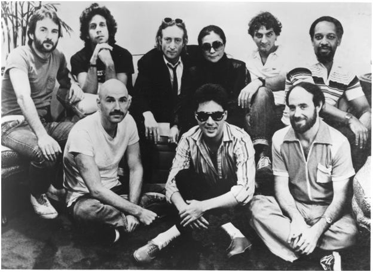 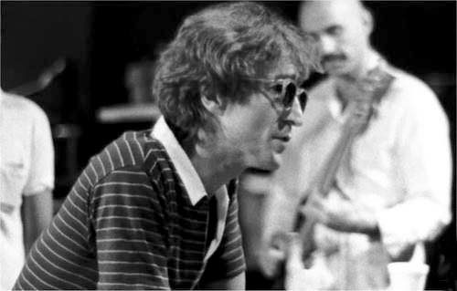 Arriba x2: Tony Levin durante las sesiones de grabación de "Double Fantasy", de Lennon-Ono, 1980.
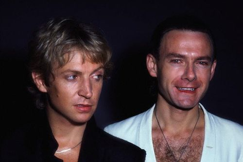  RF con Andy Summers RF con Andy Summers
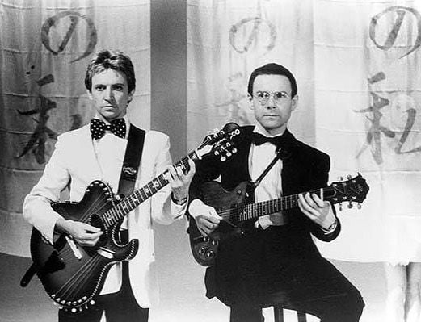 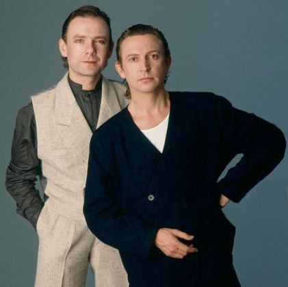 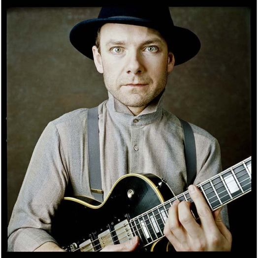 1985
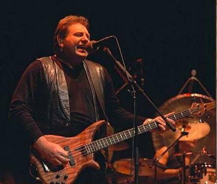 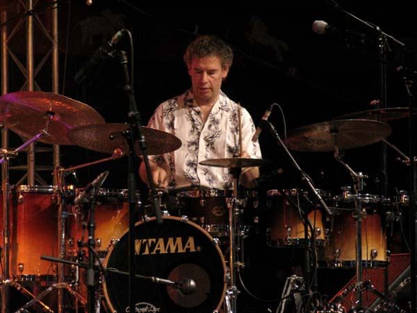 Arriba izquierda: Lake en vivo con ELP, 1997. Derecha: Bill Bruford. 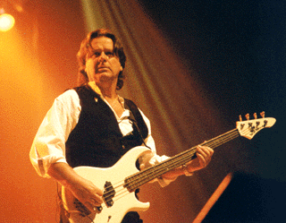 
Arriba: John Wetton (izquierda: en vivo con Asia; derecha: con Ian McDonald en enero de 1998)
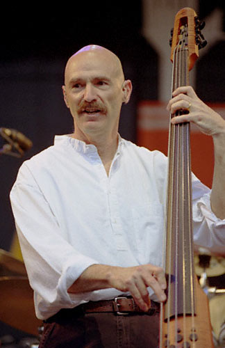 
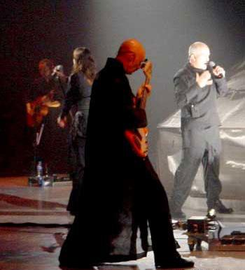 Arriba: Levin (centro y derecha: en vivo con Peter Gabriel, presentando el disco "Up" de 2002) Abajo: 21st Century Schizoid Band (desde la izquierda: Mel Collins, Jakszyk, Michael y Peter Giles, y McDonald) 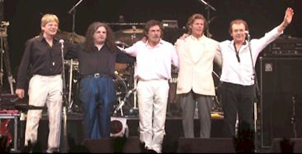 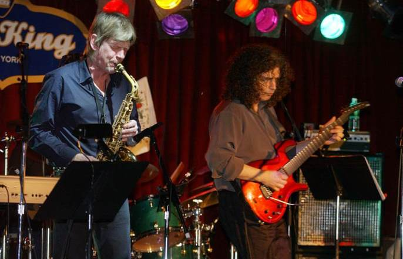 Arriba: Mel Collins y Jakko Jakszyk en vivo en 2004, con la 21st Century Schizoid Band
Arriba izquierda: Fripp y Eno en 2004, época en la que grabaron el album "The equatorial stars". Derecha: Cross, en vivo en Italia, febrero de 2008. Abajo x 2: Van der Graaf Generator, en su reunión de 2005, 27 años después de su disolución.
Arriba x2: Asia en 2006 (Howe, Palmer y Wetton). Abajo: Asia en sus últimos años.
Fripp & The league of crafty guitarists , gira de 2007.
Fripp. A la izquierda, con su esposa Toyah Willcox.
Toyah (3ra. de la izquierda) en el film Quadrophenia (1979). En el centro, Sting.
Arriba: 6 de octubre de 2009 en estudios Air de Londres. De izquierda a derecha: Michael Giles, Peter Sinfield, Bill Bruford, David Cross, Robert Fripp, John Wetton y Mel Collins. Junto a periodistas y técnicos escucharon viejos temas de KC remixados para surround sound 5.1 (la nueva mezcla fue realizada por Steven Wilson, de Porcupine Tree) y que forman parte de nuevas ediciones de discos de las primeras etapas de KC, lanzadas desde setiembre de ese año como parte de la celebración del 40 aniversario de la banda. Temas escuchados: 21st Century schizoid man, Epitaph, The court of the crimson king, The battle of glass tears, Starless y Larks' tongues in aspic I. Abajo x 2: Fripp y Theo Travis en Málaga, 30/4/2010
Abajo x 3: Fripp y Theo Travis en All Saints Church, Falmouth (UK), 29/10/2010. Última de abajo, en Barcelona.
Abajo x 2: Stick Men (Reuter, Mastelotto, Levin) con David Cross en vivo en 2015, grabando el álbum "Midori" en Japón.
Arriba izquierda: el viejo bajo de Levin de los '80 lo sigue acompañando en la gira de 2017. Derecha: por fin se sabe por qué al escuchar a Levin tocar el stick parece que tiene 4 manos.
Dibujos de Charlie Roy |


 Peter Giles,
Michael Giles, novia de Michael, McDonald
y Fripp, noviembre de 1968 durante la grabación de una sesión para el programa
de televisión Color Me Pop de la BBC2.
Peter Giles,
Michael Giles, novia de Michael, McDonald
y Fripp, noviembre de 1968 durante la grabación de una sesión para el programa
de televisión Color Me Pop de la BBC2.


 Afiche
Fripp & Eno, Madrid 1975
Afiche
Fripp & Eno, Madrid 1975 Wetton y
Bruford en vivo con UK
Wetton y
Bruford en vivo con UK Fripp,
Levin y Gabriel, 1977
Fripp,
Levin y Gabriel, 1977
 Fripp y
Debbie Harry (Blondie)
Fripp y
Debbie Harry (Blondie)


 Belew con Bowie (1990)
Belew con Bowie (1990) 


 Los años pasan
para todos... Abajo: la liga de los guitarristas, 2014.
Los años pasan
para todos... Abajo: la liga de los guitarristas, 2014.